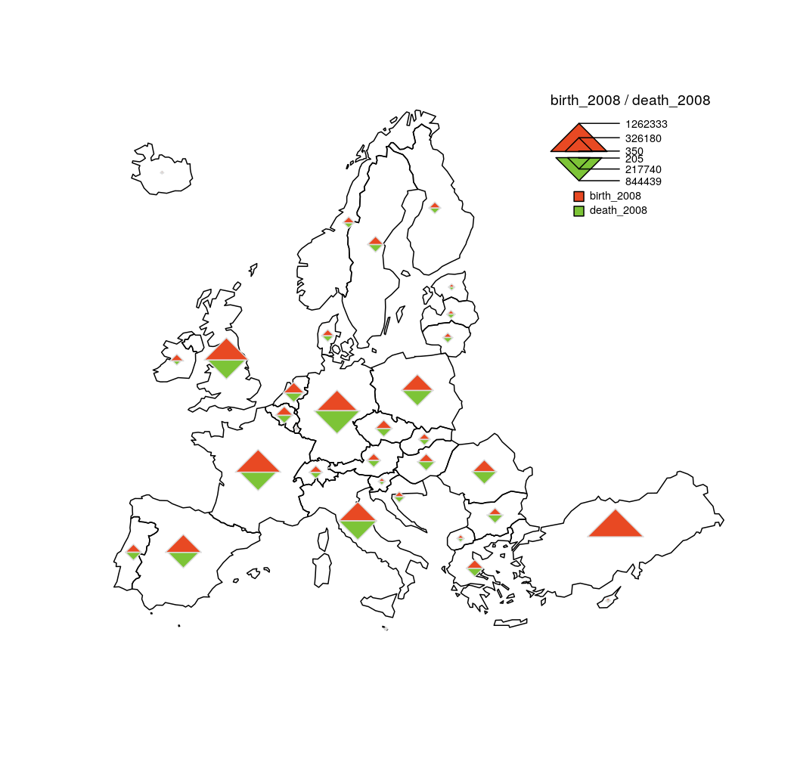

Plot a double proportional triangles layer.
propTrianglesLayer(
x,
spdf,
df,
spdfid = NULL,
dfid = NULL,
var1,
col1 = "#E84923",
var2,
col2 = "#7DC437",
k = 0.02,
legend.pos = "topright",
legend.title.txt = paste(var1, var2, sep = " / "),
legend.title.cex = 0.8,
legend.var1.txt = var1,
legend.var2.txt = var2,
legend.values.cex = 0.6,
legend.values.rnd = 0,
legend.style = "c",
legend.frame = FALSE,
add = TRUE
)an sf object, a simple feature collection. If x is used then spdf, df, spdfid and dfid are not.
a SpatialPointsDataFrame or a SpatialPolygonsDataFrame; if spdf is a SpatialPolygonsDataFrame symbols are plotted on centroids.
a data frame that contains the values to plot. If df is missing spdf@data is used instead.
name of the identifier variable in spdf, default to the first column of the spdf data frame. (optional)
name of the identifier variable in df, default to the first column of df. (optional)
name of the first numeric variable to plot, positive values only (top triangle).
color of top triangles.
name of the second numeric variable to plot, positive values only (bottom triangle).
color of bottom triangles.
share of the map occupied by the biggest symbol.
position of the legend, one of "topleft", "top", "topright", "left", "right", "bottomleft", "bottom", "bottomright". If legend.pos is "n" then the legend is not plotted.
title of the legend.
size of the legend title.
label of the top variable.
label of the bottom variable.
size of the values in the legend.
number of decimal places of the values displayed in the legend.
either "c" or "e". The legend has two display styles, "c" stands for compact and "e" for extended.
boolean; whether to add a frame to the legend (TRUE) or not (FALSE).
whether to add the layer to an existing plot (TRUE) or not (FALSE).
library(sf)
mtq <- st_read(system.file("gpkg/mtq.gpkg", package="cartography"))
#> Reading layer `mtq' from data source
#> `/tmp/RtmpRssvYW/temp_libpath10c7aeccd44/cartography/gpkg/mtq.gpkg'
#> using driver `GPKG'
#> Simple feature collection with 34 features and 7 fields
#> Geometry type: MULTIPOLYGON
#> Dimension: XY
#> Bounding box: xmin: 690574 ymin: 1592536 xmax: 735940.2 ymax: 1645660
#> Projected CRS: WGS 84 / UTM zone 20N
# Employed Active Population
mtq$OCC <- mtq$ACT-mtq$CHOM
plot(st_geometry(mtq), col = "lightblue4",border = "lightblue3",
bg = "lightblue1")
propTrianglesLayer(x = mtq, var1 = "OCC", var2 = "CHOM",
col1="green4",col2="red4",k = 0.1)
layoutLayer(title = "Active Population in Martinique, 2015")
